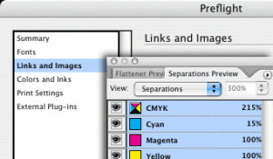

Печать, как и любой производственный процесс, имеет ряд технологических ограничений. Для получения качественного результата необходимо придерживаться некоторых правил.
Все предоставляемые к тиражированию оригинал-макеты в цифровом виде должны соответствовать следующим техническим параметрам:
Электронные носители
- CD-ROM/RW CD-ROM/RW
- DVD-ROM/RW DVD-ROM/RW
- Любые внешние носители USB, FireWare (со своими шнурами).
Версии программ, в которых принимаются макеты
- Adobe Acrobat
- Adobe Indesign CS5 и ниже
- Adobe Illustrator CS5 и ниже
- Corel Draw X8 и ниже
- Adobe Photoshop CS5 (формат файла tiff без слоев, альфа-каналов, если файл требует доработки – предоставляется psd с необходимыми слоями).
Желательно использовать в имени файлов только латинские буквы a-z, A-Z и цифры 0–9. Называть файлы следует в соответствии с их содержанием, например: 025_block.pdf означает, что файл содержит 25‑ю страницу блока.
Форматы файлов: Adobe PDF не выше v. 1.6 (не содержащие эффектов прозрачностей)PS Level 2/3. Консультацию по подготовке PDF и PS файлов, а также готовые профили для программ можно получить у специалиста отдела препресс нашей типографии.
Требования к электронному макету
Электронный макет в типографию может быть предоставлен в виде единого файла или в виде отдельных файлов для каждой полосы.
Формат листа документа должен соответствовать послеобрезному размеру готового изделия. Недопустимо подготавливать макет разворотами на одной странице документа. В случае предоставления готового макета со спуском полос ответственность за правильность спуска несет заказчик.
В случае предоставления отдельных файлов, заголовок каждого файла должен соответствовать содержанию, например: Page_001–010.pdf означает, что файл содержит макет издания с 1‑й по 10‑ю страницы. Система нумерации (маркировки) постраничных файлов должна отвечать следующим требованиям:
- 01.pdf, 02.pdf, 03.pdf, 10.pdf – для блока объемом от 0 до 99 страниц;
- 001.pdf, 002.pdf, 010.pdf, 100.pdf – для блока объемом от 100 страниц и выше.
Технологические параметры макета
В случае, если формат издания отличается от стандартных (форматы А2, А3, А4, А5, А6) его необходимо согласовать со специалистом типографии, так как избранный формат будущего издания может не соответствовать технологическим параметрам печатного и постпечатного оборудования.
Для всех типов работ должны быть подготовлены «дозаливки» (вылеты, припуски) по 2 мм для одностраничных изделий, 3 мм – для многостраничных изданий, или требующих вырубку. Значимые элементы (фотографии, текст), которые не должны уходить под обрез располагаются на расстоянии не менее 3 мм от обрезного формата.
Технологические особенности печатного процесса
Не допускается использование линий с толщиной менее 0,5 pt и размещение текстовых блоков с использованием кегля размером менее 6 pt при печати их вывороткой на фоне, представляющим составной цвет, а также при назначении им цвета, состоящего из двух и более красок.
При использовании тонких линий необходимо учитывать минимальную толщину, воспроизводимую при печати, в зависимости от плотности растра:
- до 24% – 0,45 pt (0,15 мм);
- от 25 до 49% – 0,3 pt (0,1 мм);
- от 50 до 100% – 0,2 pt (0,07 мм).
В случае несоответствия предъявленным требованиям велика вероятность потери тонколинейных элементов при печати.
В зависимости от цвета текста минимальный размер шрифта должен быть равен:
- для рубленых гарнитур – 6 pt (CMYK), 4 pt (монохромный цвет);
- для засеченных гарнитур – 7 pt (CMYK), 5 pt (монохромный цвет);
- выворотка для рубленых гарнитур – 7 pt (CMYK), 5 pt (монохромный цвет);
- выворотка для засеченных гарнитур – 8 pt (CMYK), 6 pt (монохромный цвет).
Отследить наличие элементов, несоответствующих вышеупомянутым параметрам, не всегда возможно, особенно на стадии допечатной подготовки макетов. Нередко эта ошибка проявляется лишь при печати тиража. А исправление подобных «ляпов», выявленных на приладке, влечет за собой неизбежные издержки (со стороны заказчика) за повторный вывод форм и приладку оборудования, а так же может стать причиной изменения сроков сдачи готовой продукции.
Шрифты
Шрифты, использованные в макете, при использовании программ CorelDraw или Illustrator, должны быть переведены в кривые, при подготовке макета в Indesign шрифты и изображения должны быть приложены к макету в отдельных папках. В случае отсутствия шрифта в макете он автоматически заменяется на Courier. Также не рекомендуется использование системных шрифтов, так как при обработке файлов на растровом процессоре велика вероятность их замены.
Цвет
Макет не должен содержать объектов, отличных от цветового пространства CMYK. Допустимо использование смесевых цветов PANTONE® в случае печати смесевыми красками. Не допускается наличие элементов серого цвета, подготовленных от 2‑х, 3‑х или 4‑х цветов. Серый цвет необходимо получать только из черного цвета (Black). В противном случае возможен «разнотон» по тиражу.
Черным заливкам, требующим насыщенного, глубокого черного цвета, необходимо назначать следующее соотношение по CMYK – 50/40/40/98. В случае несоблюдения этих требований и подготовки черных плашек с другим составом по CMYK, полученный черный может передавать оттенки других цветов. Суммарная красочность изображений не должна превышать 300 %. В противном случае возможно появления эффектов «отмарывания» (тенения), непроработки элементов в тенях и «выщипывания» волокон бумаги при печати.
Растровые изображения
Все изображения, используемые в макете, должны быть представлены в цветовой модели «CMYK» и иметь разрешение 300 dpi! Недопустимы изображения в цветовом пространстве «RGB», «LAB» и т. п. Черно-белые изображения должны быть подготовлены как «Grayscale». Штриховые изображения – как «Bitmap» и иметь разрешение 1200 dpi. Не допускается использование растрированного текста менее 8 пунктов, особенно подготовленного вывороткой и от 2‑х – 4‑х цветов.
При использовании формата *.JPEG для растровых изображений следует помнить, что степень сжатия достигается за счет потери качества изображения. Применение форматов *.GIF, *.BMP, *.PICT, а так же изображений, помещенных в верстку через «буфер обмена» просто недопустимо.
Более подробно рассмотрены некоторые нюансы в статье «Подготовка оригинал-макета к печати».